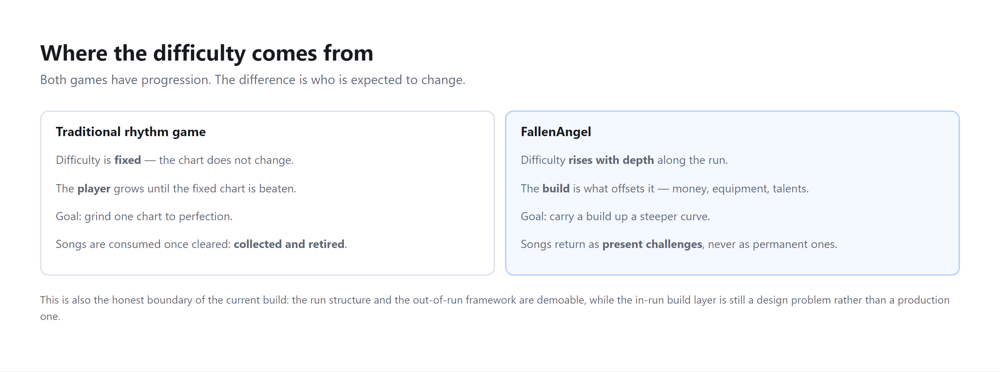
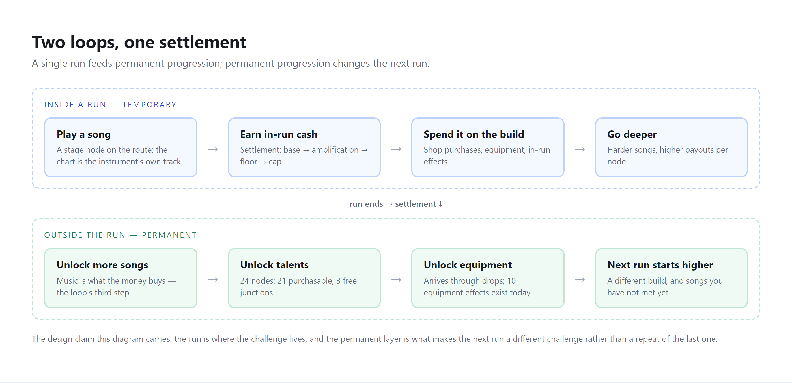
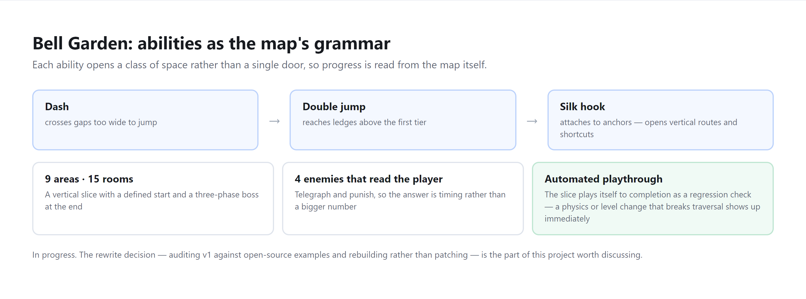
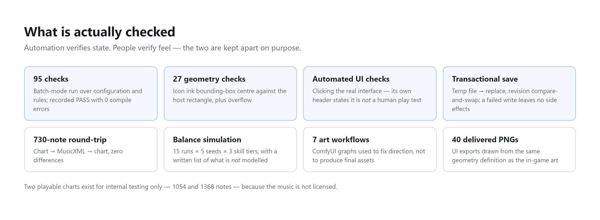
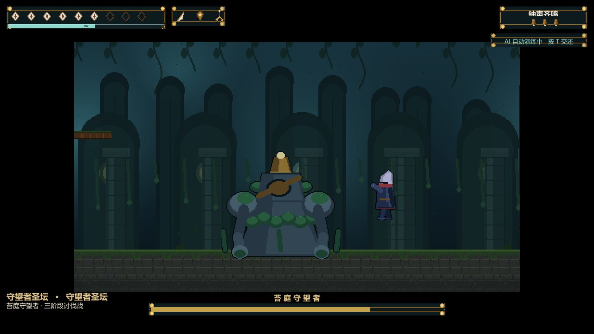
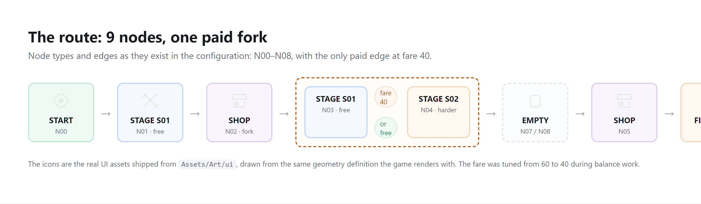
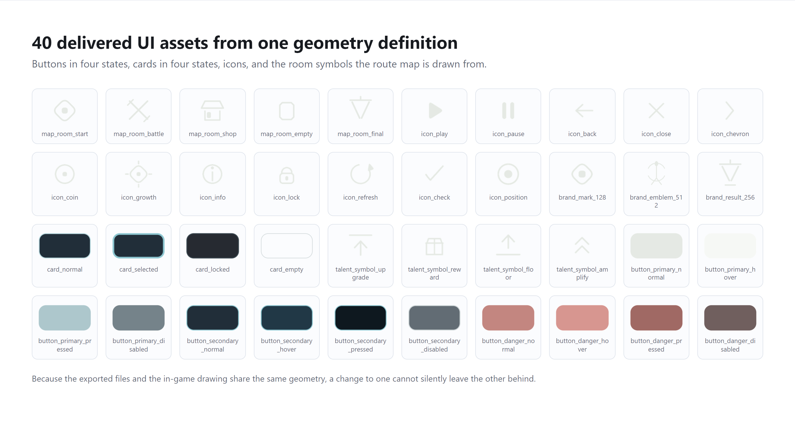

Concretely: I work the gameplay out, turn systems into design docs and config tables, turn repeated work into tools, and then verify the result on device myself. Implementation is written by AI against my spec — the spec, the boundaries and the acceptance criteria are mine.
Five layers below: gameplay design → implementation → systems → art → music. Each one says what I did, how far it got, and how it was checked. Every figure opens full size.
| Project | What it is | What I own |
|---|---|---|
| FallenAngel | Unity rhythm game: songs live inside a run instead of being collected once | Gameplay and system design, config tables, the chart editor, verification |
| Bell Garden | Metroidvania vertical slice (Windows + Android) | Gameplay and gating rules, art direction decisions, directing and accepting a full rewrite |
| Game Forge | A local dashboard for running several projects at once | Requirements and rule design, the state model, verification |
| StylesVN | A full-length visual novel (non-commercial fan work) | Narrative pipeline design: the script is the data |
I don't start from "what should we add". I start from the problem the genre has not solved.
Once you have full-comboed or all-perfected a song, you rarely open it again. The content is consumed by the act of mastering it, and the only thing left is a higher score.
So songs go inside a run: the ones you meet on the way come back later at a different difficulty and in a different shape. Difficulty rises with depth, and what offsets it is what the player has built up along the way. A song stops being a trophy and becomes an opponent you meet again.
A song is split into the parts it actually has — bass, riff, chords. You perform the one instrument you picked, so you hear the parts that normally disappear under the melody. You cover one seat rather than the whole song.
The first chapter is built on one line: walk the road the kid who never got to walk it would have walked. In mechanics that becomes a swap — take out everything that presses down on a person in real life and replace it with things that carry the same weight but can become a game:
That is where the through-line comes from: you promised someone you would find them once you could finish that piece — and you only know the first half. Progress then has a concrete shape: how far you can play depends on how far you have travelled, and the further you go the less the places look like anywhere you know. Because there is a promise, failing is not death — it is a leg you did not finish.
What the player meets is not "a song" but one song × one instrument, and that combination is a level. You pick a musician identity at the start and it decides which charts you play all run; the same song appearing twice with different instruments is normal — so "one song, many charts" is not a selling point here, it is what makes the whole structure work.
Companions are the same idea in one rule: you meet someone on the road, they travel one layer with you, and when you go deeper they are gone. They might leave something behind, or nothing at all. The mechanism and the feeling are the same thing — "we travelled a stretch together" is both a rule and what the chapter is about.
Dash crosses gaps you cannot jump, the double jump reaches a layer you could not touch, the hook latches onto points that were out of range. Each ability opens a whole class of space, so progress is read from the map itself instead of a pop-up telling you that you got stronger.



I don't write the code. Whether it lands correctly, or quietly drifts, is mine to judge.
The rules I give the AI are written down, not re-stated each time: which files may change (scripts only), which must be edited by hand in the editor (scenes, prefabs), which are off limits (no new packages, no changes to project settings). Every change has to pass two checks — a headless compile check before commit, and automatic validation over charts and configuration.
That chart-and-config validation is currently 340 checks across 21 suites, all green. Automated checks can only prove the system is not broken; whether it is fun has to be played. So every version gets run on device.
When long notes started rendering wrong, my first explanation was that a length cap was cutting them off. Testing killed that explanation: the real cause was render order and gradient distribution. I compared the upstream open-source implementation line by line and adopted its approach (no length clamp, a separate mesh, explicit layering). When my judgement is wrong, the judgement changes — that habit matters more than the answer.
In Bell Garden I went one step further: I let the AI play the whole slice from the start to the three-phase boss. Every time combat feel or a level changes, the first question is whether the game can still be finished at all — a much stronger signal than "no errors in the console".


A system always ends up as two artefacts: a document another person can read, and a table that can be changed again tomorrow.
I owned this system end to end: system design and the UE documentation, the config tables, handing it to art and engineering, then following the implementation through to acceptance. I also handled item configuration, map configuration and map editing.
I write systems as structure rather than as code: in the current build, both the route and the progression are table-driven — changing structure does not mean changing code, it means editing a table. That is what makes it possible for one person to carry a project from design to implementation to acceptance.
Chapter 1's redesign is settled (2026-09-23): 3 layers, 7 performances, 16 nodes, in six node types (performance, hard fight, shop, event, rest, final room). Writing the design down before touching anything is the order I work in.
Every beat of the story — background, speaker, portrait, sound, transition — is data, so adding a scene never touches the engine. One command then compiles the script, validates the content, and plays the entire story through to its ending: a two-second feedback loop instead of a two-minute one. Nine chapters, 495 staged instructions, 437 lines of dialogue.
When AI writes most of the implementation, my job moves: I stop checking progress by reading everything and start checking it by running the thing. The tax is everything around that — opening a project just to learn its state, asking an assistant about a project it has no memory of, switching between six of them. Game Forge answers two questions without opening anything: what state each project is in, and what the next three things to do are.
Note: the in-run item and economy systems are being rebuilt from the ground up, so this section only covers what is already stable — details come back once the new version lands.

Chapter 1's register is "millennium dreamcore" — the childhood imagery of 2000s China. Setting a register is not writing adjectives; it is writing rules that can be enforced. Design settled 2026-09-23; implementation has not started.
Rule one: only take light, emptiness and repetition — no uncanny, no surveillance, no horror. Dreamcore has two directions: the gentle kind of empty and the uncanny kind. The second is allowed only a little, deep in the part where the world stops looking like anywhere real, and it is there to produce wonder, never fear.
Rule two: every element has to pass one filter — touched, stood in, or heard, at least one of the three. So light is not "ambient lighting", it is an overexposed afternoon, the green-white of a fluorescent tube, the blue of a TV screen, CRT scanlines, VHS noise. Space is not "a level", it is an empty mall atrium, a stopped carousel, a primary-school playground at dusk, a corridor in an old guesthouse, a row of dark monitors in an internet café. Objects are not "items", they are a flip phone, a repeater, a Walkman, a CD case, stickers, the spectrum display of a 2000s Chinese music player.
Rule three: the anti-list. Hype, power fantasy, pressure, horror for its own sake, elitism — any of these and the register is broken. And no systems vocabulary ever reaches the player: buffs, modules, passives, parameters live in the design doc, not on screen.
The register also has to reach the individual decisions, otherwise it is just atmosphere. For example: the judgement line uses the blue of a television; a hit is overexposed light rather than a sharp burst. Deciding how a register lands at the pixel level is the work in this layer.
External references have to yield rules, not decoration. Every work I bring in has to produce something executable: from Invisible Cities, "each stop is defined by one thought"; from Kino's Journey, "the player never intervenes in anyone's life"; from Night on the Galactic Railroad, "companions only travel one stretch"; from The Little Prince, "an object matters because someone spent time on it"; from My Old Home-era Chinese prose, "the notebook only keeps the best single moment".
Execution and delivery. Directions are first opened up with AI, then written down as a specification (palette, usage rules, share limits — an earlier quantified palette exists as an execution-layer constraint, not as the direction itself). One hard rule on process: any visual change is first output as a mock-up for me to approve, and only then enters the code; recolouring a procedurally generated shape does not count as done. On delivery, exported PNGs and in-game drawing share one geometry definition — currently 40 UI assets (buttons in four states, cards in four states, icons, route symbols), so changing one cannot silently leave the other behind.

The full production log for this layer is a separate page: from setting up the workshop, ten probe images, moving to local ComfyUI, swapping LoRAs, changing medium, sweeping denoise, to the artwork chapter 1 kept — 11 stages, about 70 intermediate images, including the versions that did not work.
A rhythm game needs charts, and whoever writes a chart has to actually hear the song. This pipeline exists for that.
One flow takes a song apart: stem separation → song form → chord per bar (with the beat where a chord changes) → drum pattern in three layers (hit time, accent, guessed timbre) → bass movement. The output drops straight into FL Studio: a MIDI track for the chord progression and a bar-by-bar drum hit sheet.
Every analysis ships with a reliability table that says what was measured and what was guessed: tempo and bar grid high, chord progression medium-high, drum timbre classification medium-high, melodic detail low — no per-note promises. Writing down the uncertain part is more useful than pretending everything is accurate.
In these projects the most valuable things were not built on purpose — they were decided. The chart editor exists because automatic chart conversion was not good enough, I judged that charts had to be authored by hand, and authoring by hand was too painful; so the tool appeared. Later I noticed it was a pattern: a quiz program written for my own exams became a general study tool, and using AI to build games produced Game Forge.
I'm happy to demo any of it live: the run loop, editing a config table, the chart editor, or the decisions I stopped and shelved.
3217106524@qq.com · 17866967160 · github.com/lixiang021011-sketch
Also reachable at lixiang021011@gmail.com · +31 6 17135117